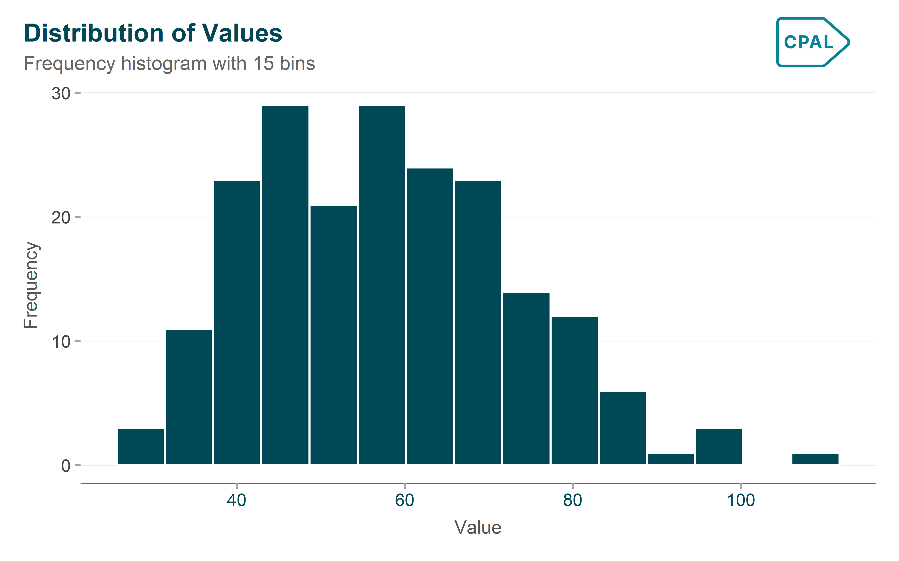
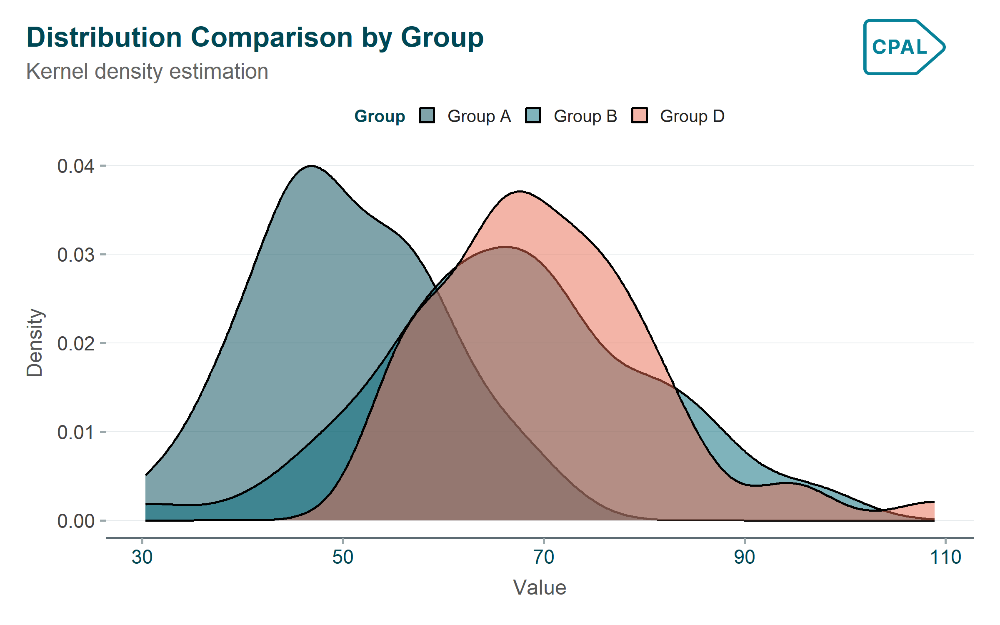

A showcase of static chart types with CPAL styling
Introduction
This gallery showcases various static chart types using ggplot2 with CPAL styling via cpaltemplates. Each example demonstrates proper use of themes, color palettes, and formatting.
When to use: Use when showing how multiple components contribute to a total over time.
Show code
p <- monthly_data |>ggplot(aes(x = month_num, y = participants, fill = program)) +geom_area(alpha =0.7) +scale_fill_cpal_d() +scale_x_continuous(breaks =1:12, labels = month.abb) +labs(title ="Total Program Participation",subtitle ="Combined enrollment across all programs",x ="Month",y ="Total Participants",fill ="Program" ) +theme_cpal() +theme(legend.position ="top")add_cpal_logo(p)
Distribution Charts
Histogram
When to use: Use to understand the distribution of a single continuous variable.
Show code
p <- distribution_data |>ggplot(aes(x = value)) +geom_histogram(bins =15, fill = palette_cpal_main[1], color ="white") +labs(title ="Distribution of Values",subtitle ="Frequency histogram with 15 bins",x ="Value",y ="Frequency" ) +theme_cpal()add_cpal_logo(p)

Density Plot
When to use: Use to visualize the probability distribution of continuous data.
Show code
p <- distribution_data |>filter(group %in%c("Group A", "Group B", "Group D")) |>ggplot(aes(x = value, fill = group)) +geom_density(alpha =0.5) +scale_fill_cpal_d() +labs(title ="Distribution Comparison by Group",subtitle ="Kernel density estimation",x ="Value",y ="Density",fill ="Group" ) +theme_cpal() +theme(legend.position ="top")add_cpal_logo(p)

Boxplot
When to use: Use to compare distributions across groups in a compact form.
Show code
p <- distribution_data |>ggplot(aes(x = group, y = value, fill = group)) +geom_boxplot(alpha =0.7, width =0.54) +scale_fill_cpal_d() +labs(title ="Value Distribution by Group",subtitle ="Box shows median and quartiles; whiskers show range",x =NULL,y ="Value" ) +theme_cpal() +theme(legend.position ="none")add_cpal_logo(p)
Heatmaps & Correlation
Heatmap
When to use: Use to display patterns in data across two categorical dimensions.